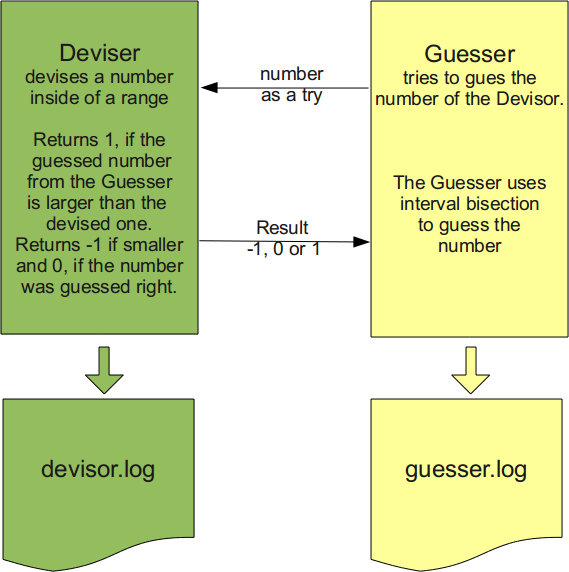
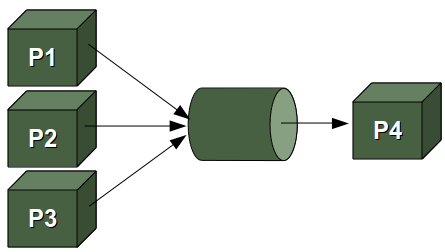

Pipes in Python
Pipe
Unix or Linux without pipes is unthinkable, or at least, pipelines are a very important part of
Unix and Linux applications. Small elements
are put together by using pipes. Processes are chained together by their standard streams, i.e. the
output of one process is used as the input of another process. To chain processes like this, so-called
anonomymous pipes are used.
The concept of pipes and pipelines was introduced by Douglas McIlroy,
one of the authors of the early command shells, after he noticed that much of the time they
were processing the output of one program as the input to another.
Ken Thompson added the concept of pipes to the UNIX operating system in 1973. Pipelines have later been
ported to other operating systems like DOS, OS/2 and Microsoft Windows as well.
Generally there are two kinds of pipes:
- anonymous pipes
and - named pipes
Beer Pipe in Python
"99 Bottles of Beer" is a traditional song in the United States and Canada. The song is derived from the English "Ten Green Bottles". The song consists of 100 verses, which are very similiar. Just the number of bottles varies. Only one, i.e. the hundredth verse is slighly different. This song is often sung on long trips, because it is easy to memorize, especially when drunken, and it can take a long time to sing.Here are the lyrics of this song:
Ninety-nine bottles of beer on the wall, Ninety-nine bottles of beer. Take one down, pass it around, Ninety-eight bottles of beer on the wall.
The next verse is the same starting with 98 bottles of beer. So the general rule is, each verse one bottle less, until there in none left. The song normally ends here. But we want to implement the Aleph-Null (i.e. the infinite) version of this song with an additional verse:
No more bottles of beer on the wall, no more bottles of beer. Go to the store and buy some more, Ninety-nine bottles of beer on the wall.
This song has been implemented in all conceivable computer languages like "Whitespace" or "Brainfuck". You find the collection at http://99-bottles-of-beer.net
We program the Aleph-Null variant of the song with a fork and a pipe:
import os
def child(pipeout):
bottles = 99
while True:
bob = "bottles of beer"
otw = "on the wall"
take1 = "Take one down and pass it around"
store = "Go to the store and buy some more"
if bottles > 0:
values = (bottles, bob, otw, bottles, bob, take1, bottles - 1,bob,otw)
verse = "%2d %s %s,\n%2d %s.\n%s,\n%2d %s %s." % values
os.write(pipeout, verse)
bottles -= 1
else:
bottles = 99
values = (bob, otw, bob, store, bottles, bob,otw)
verse = "No more %s %s,\nno more %s.\n%s,\n%2d %s %s." % values
os.write(pipeout, verse)
def parent():
pipein, pipeout = os.pipe()
if os.fork() == 0:
child(pipeout)
else:
counter = 1
while True:
if counter % 100:
verse = os.read(pipein, 117)
else:
verse = os.read(pipein, 128)
print 'verse %d\n%s\n' % (counter, verse)
counter += 1
parent()
The problem in the code above is, that we or better the parent process have to know exactly
how many bytes the child will send each time. For the first 99 verses it will be 117 Bytes
(verse = os.read(pipein, 117)) and for the Aleph-Null verse it will be 128 bytes
(verse = os.read(pipein, 128)
We fixed this in the following impelementation, in which we read complete lines:
import os
def child(pipeout):
bottles = 99
while True:
bob = "bottles of beer"
otw = "on the wall"
take1 = "Take one down and pass it around"
store = "Go to the store and buy some more"
if bottles > 0:
values = (bottles, bob, otw, bottles, bob, take1, bottles - 1,bob,otw)
verse = "%2d %s %s,\n%2d %s.\n%s,\n%2d %s %s.\n" % values
os.write(pipeout, verse)
bottles -= 1
else:
bottles = 99
values = (bob, otw, bob, store, bottles, bob,otw)
verse = "No more %s %s,\nno more %s.\n%s,\n%2d %s %s.\n" % values
os.write(pipeout, verse)
def parent():
pipein, pipeout = os.pipe()
if os.fork() == 0:
os.close(pipein)
child(pipeout)
else:
os.close(pipeout)
counter = 1
pipein = os.fdopen(pipein)
while True:
print 'verse %d' % (counter)
for i in range(4):
verse = pipein.readline()[:-1]
print '%s' % (verse)
counter += 1
print
parent()
Bidirectional Pipes
Now we come to something completely non-alcoholic. It's a simple guessing game, which small children often play. We want to implement this game with bidirectional Pipes. There is an explanation of this game in our tutorial in the chapter about loops. The following diagram explains both the rules of the game and the way we implemented it:
The Devisor has to guess a number between a range of 1 to n. The Guesser inputs his guess. The Devisor informs the player, if this number is larger, smaller or equal to the secret number, i.e. the number which the Devisor has randomly created. Both the Devisor and the Guesser write their results into log files, i.e. deviser.log and guesser.log respectively.
This is the complete implementation:
import os, sys, random
def deviser(max):
fh = open("devisor.log","w")
to_be_guessed = int(max * random.random()) + 1
guess = 0
while guess != to_be_guessed:
guess = int(raw_input())
fh.write(str(guess) + " ")
if guess > 0:
if guess > to_be_guessed:
print 1
elif guess < to_be_guessed:
print -1
else:
print 0
sys.stdout.flush()
else:
break
fh.close()
def guesser(max):
fh = open("guesser.log","w")
bottom = 0
top = max
fuzzy = 10
res = 1
while res != 0:
guess = (bottom + top) / 2
print guess
sys.stdout.flush()
fh.write(str(guess) + " ")
res = int(raw_input())
if res == -1: # number is higher
bottom = guess
elif res == 1:
top = guess
elif res == 0:
message = "Wanted number is %d" % guess
fh.write(message)
else: # this case shouldn't occur
print "input not correct"
fh.write("Something's wrong")
n = 100
stdin = sys.stdin.fileno() # usually 0
stdout = sys.stdout.fileno() # usually 1
parentStdin, childStdout = os.pipe()
childStdin, parentStdout = os.pipe()
pid = os.fork()
if pid:
# parent process
os.close(childStdout)
os.close(childStdin)
os.dup2(parentStdin, stdin)
os.dup2(parentStdout, stdout)
deviser(n)
else:
# child process
os.close(parentStdin)
os.close(parentStdout)
os.dup2(childStdin, stdin)
os.dup2(childStdout, stdout)
guesser(n)
Named Pipes, Fifos
 Under Unix as well as under Linux it's possible to create Pipes, which are implemented as files.These Pipes are called "named pipes" or sometimes Fifos (First In First Out).
A process reads from and writes to such a pipe as if it were a regular file. Sometimes more than one process write to such a pipe but only one process reads from it.
The following example illustrates the case, in which one process (child process) writes to the pipe and another process (the parent process) reads from this pipe.
import os, time, sys
pipe_name = 'pipe_test'
def child( ):
pipeout = os.open(pipe_name, os.O_WRONLY)
counter = 0
while True:
time.sleep(1)
os.write(pipeout, 'Number %03d\n' % counter)
counter = (counter+1) % 5
def parent( ):
pipein = open(pipe_name, 'r')
while True:
line = pipein.readline()[:-1]
print 'Parent %d got "%s" at %s' % (os.getpid(), line, time.time( ))
if not os.path.exists(pipe_name):
os.mkfifo(pipe_name)
pid = os.fork()
if pid != 0:
parent()
else:
child()